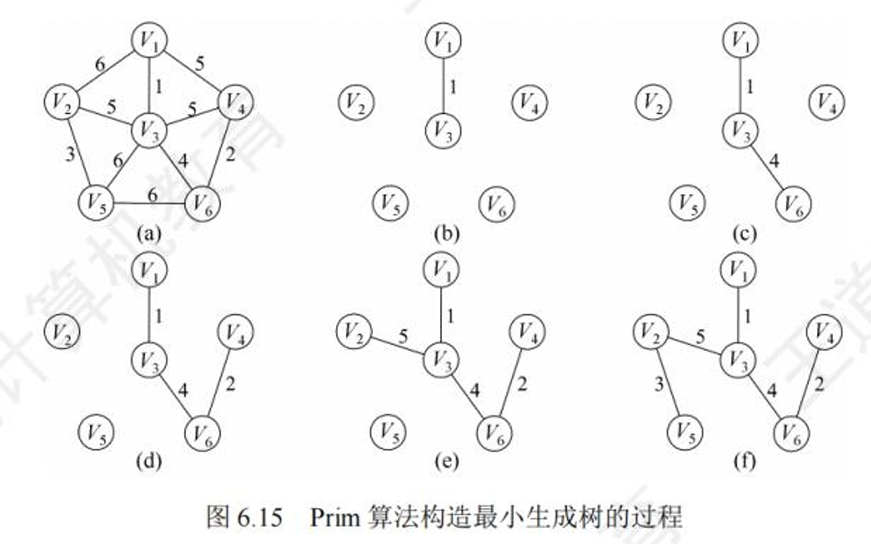
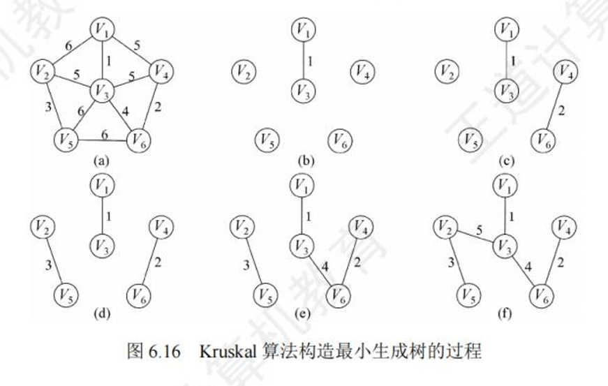
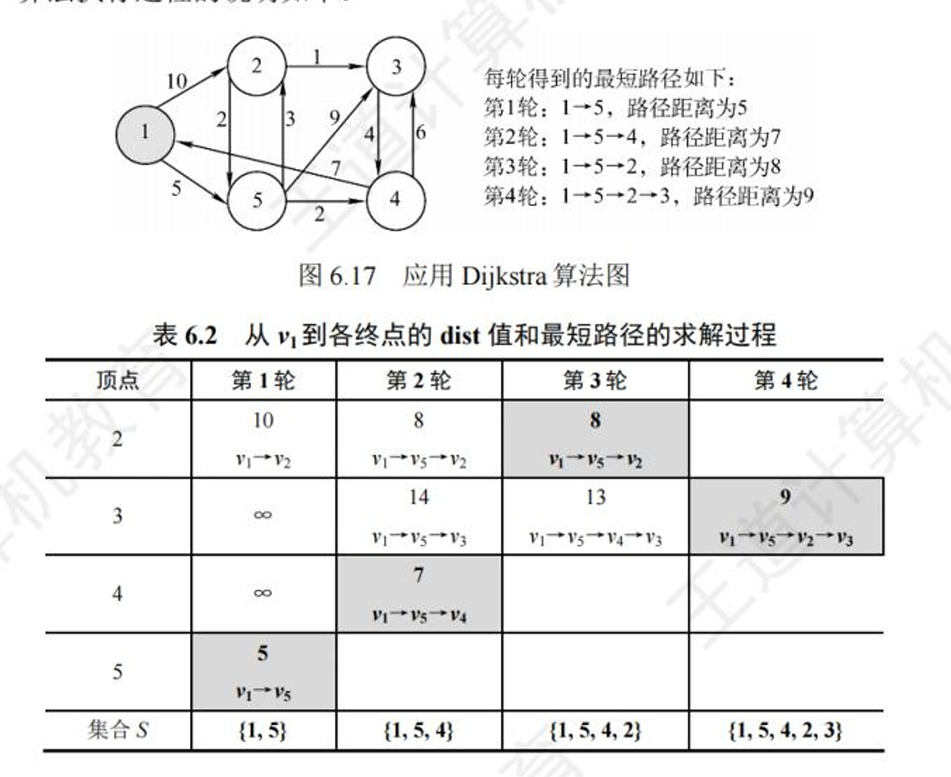
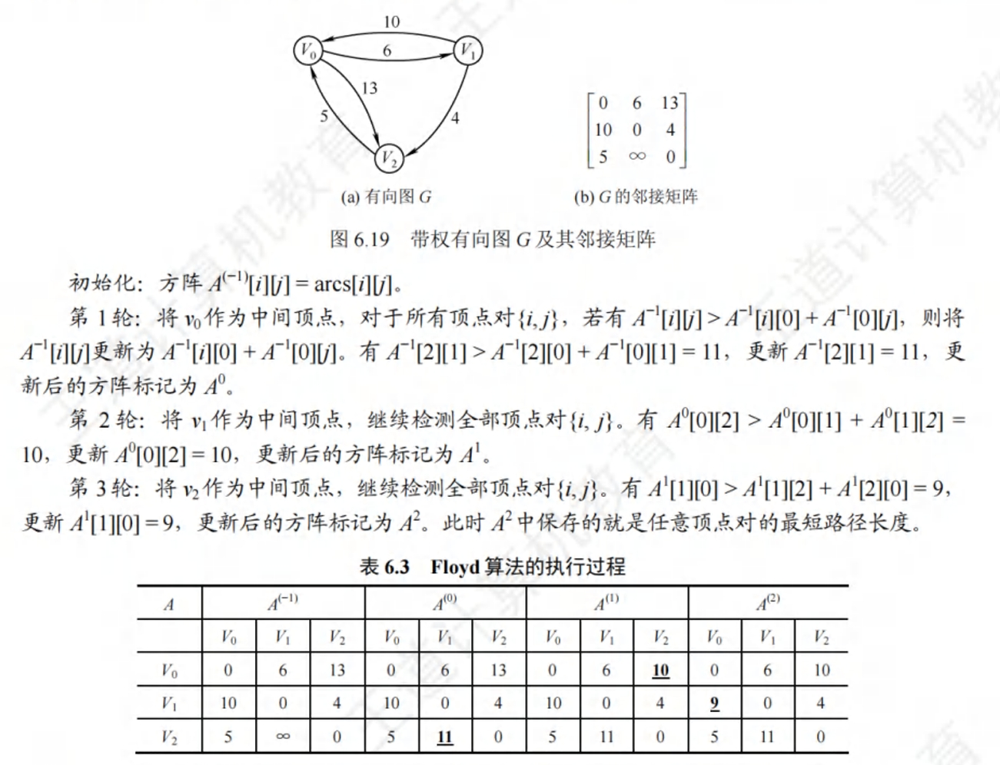

Chapter6 图
6.1 图的基本概念
6.1.1 图的定义
图G由顶点集V和边集E组成，记为G = (V,E)。线性表可以是空表，树可以是空树，但图不能是空图，图的顶点集V一定非空，但边集E可以为空。
-
有向图：若E是有向边（弧）的有限集合，则图G为有向图。有向边（弧）是顶点的有序对，顶点v到顶点w的弧记为
-
无向图：若E是无向边（边）的有限集合，则图G为无向图。边是顶点的无序对，记为(v,w)或(w,v)，无方向区分
-
简单图、多重图：若图G满足：1不存在重复边 2不存在顶点到自身的边，则称为简单图。若图G满足：某两个顶点之间的边数大于1，又允许顶点通过一条边和自身关联，则称为多重图
-
子图：设有两个图G=(V,E)和G'=(V',E')，若V'是V的子集，且E'是E的子集，则称G'是G的子图
-
连通、连通图和连通分量：无向图中，若顶点v到顶点w有路径存在，则称v和w是连通的。若图G中任意两个顶点都是连通的，则称图G为连通图，否则称为非连通图。无向图中的各极大连通子图称为连通分量。
-
极大、极小连通子图：极大连通子图要求子图必须连通，而且包含尽可能多的顶点和边；极小连通子图要求子图保持连通，而且使得边数最少
-
强连通图、强连通分量：有向图中，若有一对顶点v和w，从v到w和从w到v之间都有路径，则称这两个顶点是强连通的，若图中任意一对顶点都是强连通的吗，则称为强连通图。有向图中的各极大强连通子图称为有向图的强连通分量
-
生成树、生成森林：连通图的生成树是包含图中全部顶点的一个极小连通子图
-
顶点的度、入度和出度：无向图中，顶点v的度指的是依附于顶点v的边数。有向图中，顶点v的度分为入度和出度，入度是以v为终点的有向边数，出度是以v为起点的有向边数。
-
边的权和网：在一个图中，每条边都可以标上具有某种含义的数值，该数值称为该边的权值，这种边带有权值的图称为带权图。
-
稠密图、稀疏图：边数很少的图称为稀疏图，反之称为稠密图，稀疏和稠密是模糊概念。一般当图G满足|E|<|V|log|V|时，可以将G视为稀疏图。
-
路径、路径长度和回路：顶点vp到顶点vq之间的一条路径是指顶点序列vp，v1，v2，v3，。。。vq，路径是边的数目称为路径长度。第一个顶点和最后一个顶点相同的路径称为回路。
-
距离：从顶点u出发到顶点v的最短路径若存在，则此路径的长度称为从u到v的距离。若从u到v不存在路径，则该距离记为∞
6.2 图的存储及基本操作
根据不同图的结构和算法，采样不同的存储方式将对程序的效率产生较大影响，因此选择的存储结构要适应于待求解的问题。
6.2.1 邻接矩阵法
邻接矩阵：顶点数为n的图G=(V,E)的邻接矩阵A是n x n的，将G的顶点编号为v1，v2，。。。vn，则
A[i][j] = {1，(vi,vj)或
A[i][j] = {0，(vi,vj)或

//图的邻接矩阵存储结构定义
#define MaxVertexNum 100 //顶点数目的最大值
typedef char VertexType //顶点对应的数据类型
typedef int EdgeType //边对应的数据类型
typedef struct{
VertexType vex[MaxVertexNum]; //顶点表
EdgeType edge[MaxVertexNum][MaxVertexNum]; //邻接矩阵，边表
int vexnum,arcnum //图的顶点数和边数
}MGraph;
-
通过邻接矩阵判断有向图还是无向图：若矩阵关于主对角线对称，则是无向图，否则为有向图
无向图中(vi,vj)和(vj,vi)是成对出现的，因此在实际存储邻接矩阵时只需要存储上三角或下三角矩阵的元素
-
邻接矩阵表示法的空间复杂度是O(n^2)，其中n为图的顶点数
-
邻接矩阵存储图，很容易确定图中任意两个顶点之间是否有边相连，但是要确定图中有多少边，必须按行和列对每个元素进行检测，所耗时间很大
-
稠密图适合使用邻接矩阵存储
6.2.2 邻接表法
邻接表：对图G的每个顶点vi建立一个单链表，第i个单链表中的结点表示依附于顶点vi的边（对于有向图则是以顶点vi为起始的弧），该单链表称为顶点vi的边表（对于有向图则称为出边表）。边表的头指针采用顺序存储，称为顶点表。邻接表中存在两种结点：顶点表结点和边表结点。
顶点表结点由两个域组成：1顶点域（data）存储顶点vi的信息 2边表头指针域（firstarc）指向第一条边的边表结点
边表结点至少由两个域组成：1邻接点域（adjvex）存储头结点顶点vi邻接的顶点编号 2指针域（nextarc）指向下一条边的边表结点

//图的邻接表存储结构
#define MaxVertexNum 100 //顶点数目的最大值
typedef struct ArcNode{ //边表结点
int adjvex; //该弧指向的顶点的位置
struct ArcNode *nextarc; //指向下一条弧的指针
//InfoType indo; //网的边权值
}ArcNode;
typedef struct VNode{ //顶点表结点
VertexType data; //顶点信息
ArcNode *firstarc; //指向第一条依附该顶点的弧的指针
}VNode,AdjList[MaxVertexNum];
typedef struct{
AdjList vertices; //邻接表
int vexnum,arcnum //图的顶点数和边数
}ALGraph; //ALGraph是以邻接表存储的图类型
-
若G为无向图，则所需的存储空间为O(|V|+2|E|)；若G为有向图，则所需的存储空间为O(|V|+|E|)。无向图中，每条边在邻接表中出现了两次
-
对应疏密图，邻接表法将极大地节省存储空间
6.2.3 十字链表
十字链表：有向图的一种链式存储结构。在十字链表中，有向图的每条弧用一个结点表示，每个顶点也用一个结点表示。顶点结点之间是顺序存储的。
弧结点有5个域：tailvex和headvex两个域分别指示弧尾和弧头这两个顶点的编号；头链域hlink指向弧头相同的下一个弧结点；尾链域tlink指向弧尾相同的下一个弧结点；info域存放该弧的相关信息。
顶点结点中有3个域：data域存放该顶点的数据信息，如顶点名称；firstin域指向以该顶点为弧头的第一个弧结点；firstout域指向以该顶点为弧尾的第一个弧结点。
6.2.4 邻接多重表
邻接多重表：无向图的一种链式存储结构。在邻接表中，容易求得顶点的边和各种信息，但在邻接表中求两个顶点之间是否存在边而对边执行删除操作时，需要分别在两个顶点的边中遍历，效率较低。
边结点有5个域：ivex和jvex这两个域指示该边依附的两个顶点的编号；ilink域指向下一条依附于顶点ivex的边；jlink域指向下一条依附于顶点jvex的边，info域存放该边的相关信息。
顶点结点有2个域组成：data域存放该顶点的相关信息，firstedge域指向第一条依附于该顶点的边
6.3 图的遍历
图的遍历指的是从图中某一顶点出发，按照某种搜索方法沿着图中的边对图中的所有顶点访问一次，且仅访问一次。注意到树是一种特殊的图，所有树的遍历实际上也可以视为一种特殊的图遍历。图的遍历算法是求解图的连通性问题、拓扑排序、关键路径求解等算法的基础
6.3.1 广度优先搜索BFS
Breadth-First-Search(BFS)，类似于二叉树的层序遍历算法。以v未起始点，由近至远依次访问和v有路径相通且路径长度为1，2，。。的顶点。是一种分层的查找过程，不像深度优先搜索那样有往回退的情况，因此它不是一个递归的算法。为了实现逐层访问，算法必须借助一个辅助队列，以记忆正在访问的顶点的下一层顶点。
(BFS：从一个节点开始，遍历它的所有邻接点，再从第一个邻接点开始，如此循环)
bool visited[MAX_VERTEX_NUM]; //访问标记数组
void BFSTraverse(Graph G){ //对图G进行广度优先遍历
for(i=0;i<G.vexnum;++i)
visited[i] = FALSE; //访问标记数组初始化
InitQueue(i); //初始化辅助队列Q
for(i=0;i<G.vexnum;++i) //从0号顶点开始遍历
if(!visited[i]) //对每个连通分量调用一次BFS
BFS(G,i); //若vi未访问过，从vi开始调用BFS
}
//邻接表BFS
void BFS(ALGraph G, int i){
visit(i); //访问初始顶点i
visited[i] = TRUE; //对i做已访问标记
EnQueue(Q,i); //顶点i入队
while(!IsEmpty(Q)){
DeQueue(Q,v); //队首顶点v出队
for(p=G.vertices[v].firstarc;p=p->nextarc){//检测v的所有邻接点
w=p->adjvex;
if(visited[w]==FALSE){
visit(w); //w为v的尚未访问邻接点，访问w
visited[w]=TRUE; //对w做已访问标记
EnQueue(Q,w); //顶点w入队
}
}
}
}
//邻接矩阵BFS
void BFS(MGraph G,int i){
visit(i); //访问初始顶点i
visited[i] = TRUE; //对i做已访问标记
EnQueue(Q,i); //顶点i入队
while(!IsEmpty(Q)){
DeQueue(Q,v); //队首顶点v出队
for(w=0;w<G.vexnum;w++)
if(visited[w]==FALSE&&G.edge[v][w]==1){
visit(w); //w为v的尚未访问的邻接点，访问w
visited[w]=TRUE; //对w做已访问标记
EnQueue(Q,w); //顶点w入队
}
}
}
6.3.2 深度优先搜索DFS
Depth-First-Search（DFS），类似于树的先序遍历。首先访问图中某一起始顶点v，然后由v出发，访问与v邻接且未被访问的任意一个顶点w1，再访问与w1邻接且未被访问的任意一个顶点w2。。。重复该步骤。当不能再继续向下访问时，依次退回到最近被访问的顶点，若它还有邻接顶点未被访问过，则从该点开始继续上述搜索过程直至所有顶点均被访问。
(DFS：从一个节点开始，向下层遍历，直到无法向下，回退至可向下遍历的点，直到所有节点被访问)
bool visited[MAX_VERTEX_NUM]; //访问标记数组
void DFSTraverse(Graph G){ //对图G进行深度优先遍历
for(i=0;i<G.vexnum;i++)
visited[i]=FALSE;
for(i=0;i<G.vexnum;i++) //初始化已访问标记数组
if(!visited[i]) //对未访问顶点调用DFS()
DFS(G,i);
}
//邻接表
void DFS(ALGraph G, int i){
visit(i); //访问初始顶点i
visited[i]=TRUE;
for(p=G.vertices[i].firstarc;p;p=p->nextarc){//检测i的所有邻接点
j=p->adjvex;
if(visited[j]==FALSE)
DFS(G,j); //j为i的尚未访问的邻接点，递归访问j
}
}
//邻接矩阵
void DFS(MGraph G, int i){
visit(i); //访问初始顶点i
visited[i]=TRUE;
for(j=0,j<G.vexnum;j++){//检测i的所有邻接点
if(visited[j]==FALSE&&G.edge[i][j]==1)
DFS(G,j); //j为i的尚未访问的邻接点，递归访问j
}
}
6.4 图的应用
6.4.1 最小生成树
一个连通图的生成树，包含图的所有顶点，并且只含尽可能少顶点边。对于生成树来说，若砍去它的一条边，则会使生成树变成非连通图；若给它增加一条边，则会形成图中的一条回路。
对于一个带权连通无向图G，生成树不同，每棵树的权也不同。权值最小的那棵生成树称为图G的最小生成树
-
Prim算法
Prim算法的执行非常类似于寻找图的最短路径中Dijkstra算法
初始时从图中任取一顶点加入树T，此时树中只含有一个顶点，之后选择一个与当前T中顶点集合距离最近的顶点，并将该顶点和相应的边加入T，每次操作后T中的顶点数和边数都+1。以此类推，直到所有顶点并入T，T即为最小生成树
(1从顶点开始，选取权值最小的边，最小边顶点加入生成树。2再寻找生成树内权值最小的边，最小边顶点加入生成树，循环。)

-
Kruskal算法
初始时为只有几个顶点而无边的非连通图T={V,{}},每个顶点自成一个连通分量。然后按照边的权值由小到大的顺序,不断选取当前未被选取过且权值最小的边,若该边依附的顶点落在T中不同的连通分量上(使用并查集判断这两个顶点是否属于同一棵集合树),则将此边加入T,否则舍弃此边而选择下一条权值最小的边。以此类推,直至T中所有顶点都在一个连通分量上。
(1将所有的边按照权值从小到大排序2依次将边从小到大加入生成树3若加入的边使树形成回路，则舍去直至所有定点加入生成树)

6.4.2 最短路径
广度优先搜索查找最短路径只是对无权图而言的。当图是带权图时，把从一个顶点v0到图中其余任意一个顶点vi的一条路径所经过边上的权值之和，定义为该路径的带权路径长度，把带权路径长度最短的那条路径(可能不止一条)称为最短路径。
带权有向图G的最短路径问题一般可分为两类:
一是单源最短路径,即求图中某一顶点到其他各顶点的最短路径,可通过经典的Dijkstra(迪杰斯特拉)算法求解;
二是求每对顶点间的最短路径,可通过Floyd(弗洛伊德)算法来求解。
-
Dijkstra算法
Dijkstra是基于贪心策略的，文字描述可能不太准确，直接用图示理解

-
Floyd算法
Floyd算法的基本思想是:递推产生一个n阶方阵序列A(-1),A(0),...,A(k),...,A(n-1),其中A(k)[i][j]表示从顶点v,到顶点v,的路径长度,k表示绕行第k个顶点的的运算步骤。初始时,对于任意两个顶点v,和v,若它们之间存在边,则以此边上的权值作为它们之间的最短路径长度;若它们之间不存在有向边,则以 作为它们之间的最短路径长度。以后逐步尝试在原路径中加入顶点k(k=0.1.....n-1)作为中间顶点。若增加中间顶点后,得到的路径比原来的路径长度减少了
